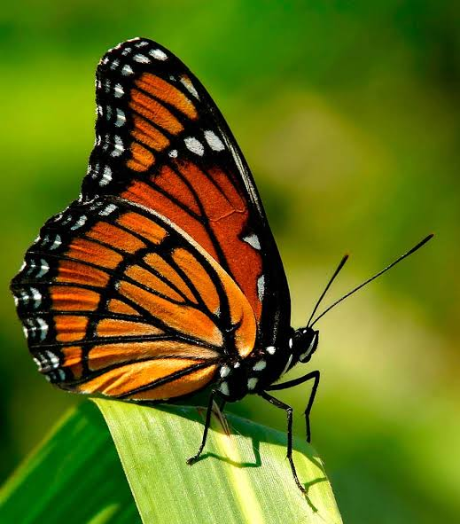
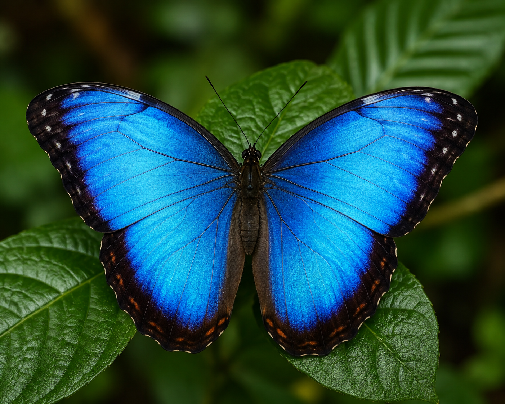
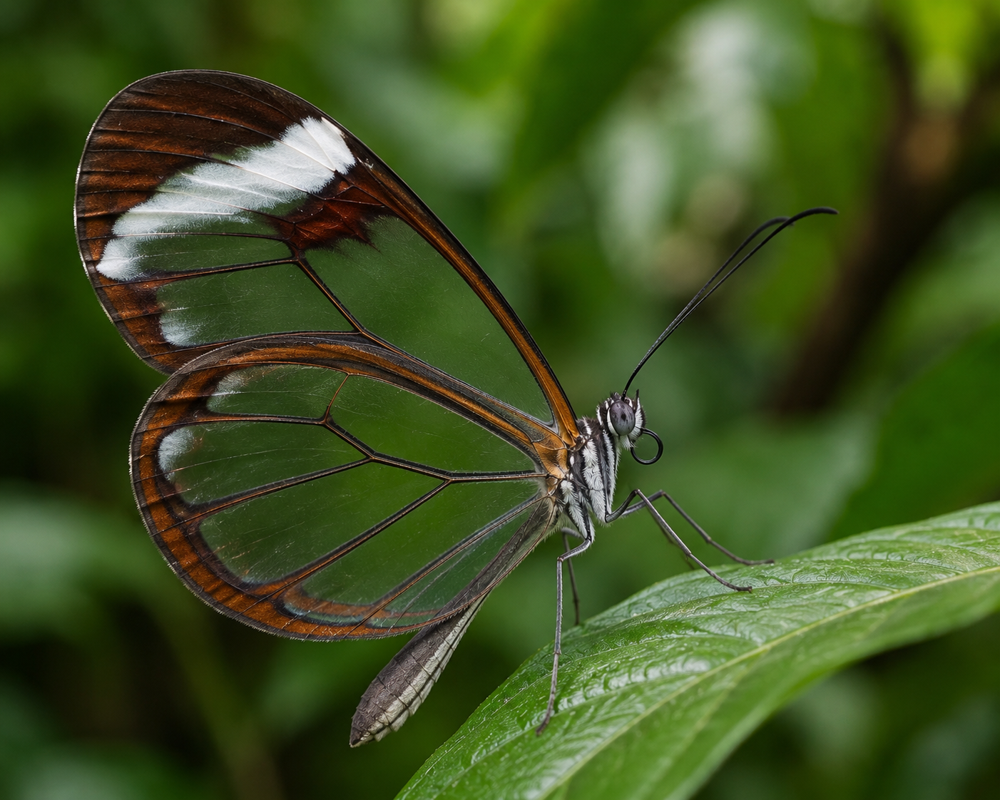
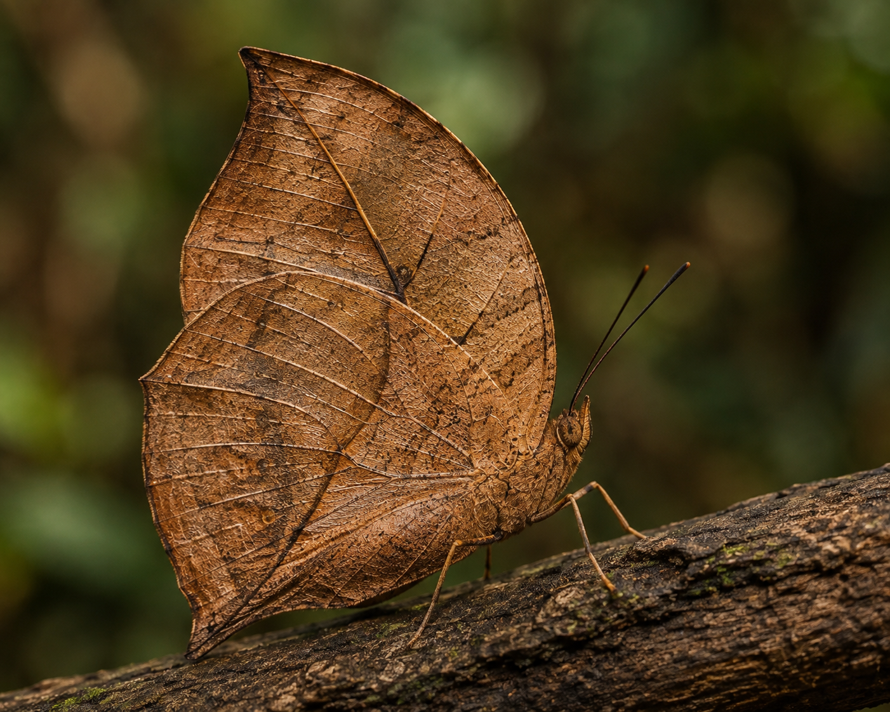
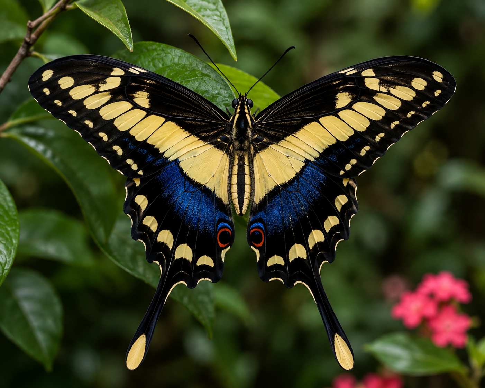
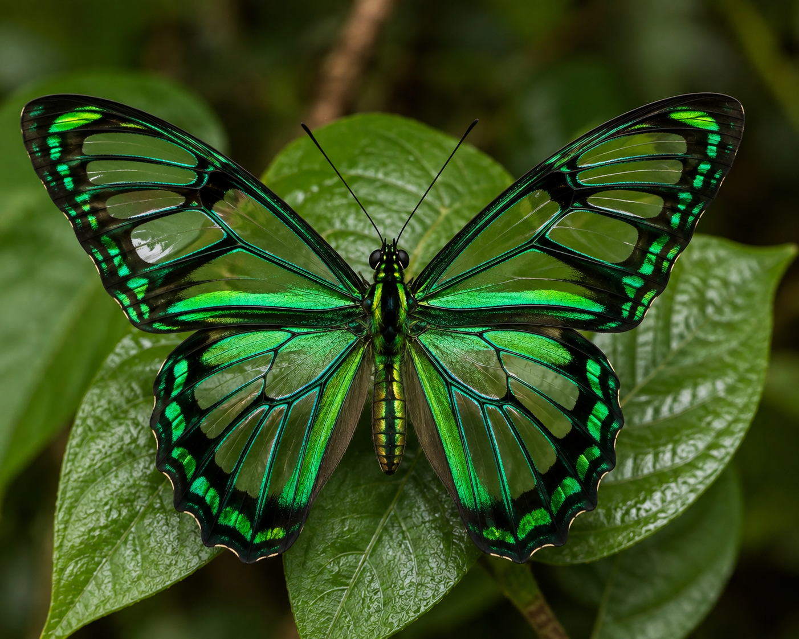

Guia de Espécies
Conheça algumas das borboletas mais fascinantes da natureza

Borboleta Monarca
📍 Onde encontrar: Américas (da América do Norte até a América do Sul, incluindo o Brasil) em jardins, campos abertos e parques.
✨ Curiosidade: Famosa por realizar uma das maiores migrações do reino animal, percorrendo milhares de quilômetros do Canadá até o México. Suas larvas alimentam-se de plantas tóxicas (algodãozinho), tornando a borboleta adulta venenosa para predadores.

Borboleta Azul Morpho
📍 Onde encontrar: Florestas tropicais da América Central e do Sul, sendo muito comum na Amazônia e na Mata Atlântica.
✨ Curiosidade: Suas asas não possuem pigmento azul verdadeiro. A cor brilhante vem do fenômeno de iridescência estrutural: microscópicas escamas nas asas refletem a luz do sol de forma a criar esse tom intenso de azul.

Borboleta Olho de Coruja
📍 Onde encontrar: Florestas tropicais úmidas e bananais da América Central e do Sul.
✨ Curiosidade: É uma das maiores borboletas das Américas. A parte inferior de suas asas apresenta mancha redonda similar aos olhos de uma coruja ou sapo, recurso de mimetismo usado para assustar pequenos predadores como pássaros.

Borboleta Asa de Vidro
📍 Onde encontrar: Florestas tropicais da América Central e do Sul, desde o México até o Brasil.
✨ Curiosidade: O tecido entre as veias de suas asas não possui as escamas coloridas tradicionais, tornando-as quase totalmente transparentes. Esse mecanismo de camuflagem permite que ela se confunda com o ambiente enquanto voa, tornando-se invisível para a maioria dos predadores.

Borboleta Folha Seca
📍 Onde encontrar: Florestas da Ásia Tropical, incluindo países como Índia, China, Tailândia e Indonésia.
✨ Curiosidade: É um dos exemplos mais perfeitos de mimetismo na natureza. Quando fecha as asas, a parte inferior lembra com precisão uma folha seca marrom, incluindo veias imitadas e marcas que parecem furos de insetos. Quando abre as asas, revela cores vibrantes em azul e laranja.

Borboleta Cauda de Andorinha Gigante
📍 Onde encontrar: Américas, do sul do Canadá até a América do Sul, comum em pomares e jardins.
✨ Curiosidade: É a maior borboleta dos Estados Unidos e Canadá. Suas lagartas têm uma tática defensiva bastante peculiar: além de se parecerem com excrementos de pássaros para evitar predadores, podem projetar um órgão glandular vermelho e cheiroso (osmetério) se forem ameaçadas.

Borboleta Smaragdina
📍 Onde encontrar: Regiões tropicais da Ásia e da Oceania (Índia, Sudeste Asiático e Austrália).
✨ Curiosidade: Conhecida por seu voo extremamente rápido e arisco, esta borboleta tem asas pretas salpicadas de manchas verde-maçã brilhantes. Dificilmente fica parada por muito tempo, alimentando-se do néctar enquanto bate as asas continuamente no ar.